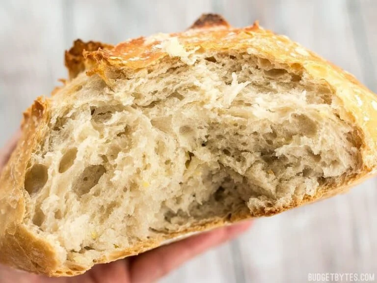

No-Kead Bread

You want this bread
Just 5 minutes of measuring and mixing is all it takes to maek this extraordinary no-knead bread dough. Follow these techniques for the best bread ever!
Ingredients
- 3 Cups All purpose flour
- 1/4 tsp instant yeast
- 1/2 Tbsp salt
- 1.5 to 1.75 cup water
Cooking Directions
- Day before baking, combine dry ingredients and mix until well combined. stir in water until a shaggy sticky ball of dough forms and there is no flour left on t he bottom of the bowl. Cover bowl loosely with plastic and let stand at room temp for 12-18 hrs
- When ready to bake, sprinklle a little flour ontop of the fermenteed dough and scrape it out of bowl (dough should be very light, fluffy, and bubbly by this time). With well floured hands, shape the dough into a ball and place it on a piece of parchment paper. Let dough rise for 30-60 minutes.
- While dough is rising, preheat oven to 425F. Place the dutch oven inside oven as it heats and make sure it sits in teh fully heated oven for at least 15 minutes before baking.
- Once bread is risen and dutch oven is fully heated, carefully remove dutch oven from oven. Lift parchment with the dough straight into the dutch oven and cover it with lid.
- Return dutch oven to heated oven and bake for 30 minutes. Carefully remove lid and bake for another 20 minutes or until crust is deep golden brown.
- lift bread out of dutch oven and allow to cool before cutting open and serving.